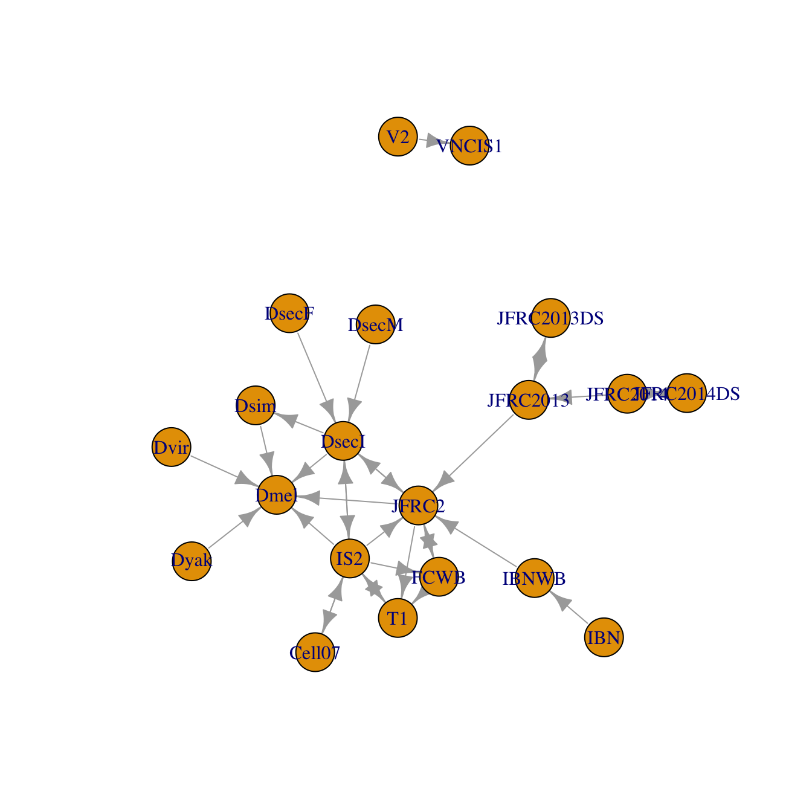
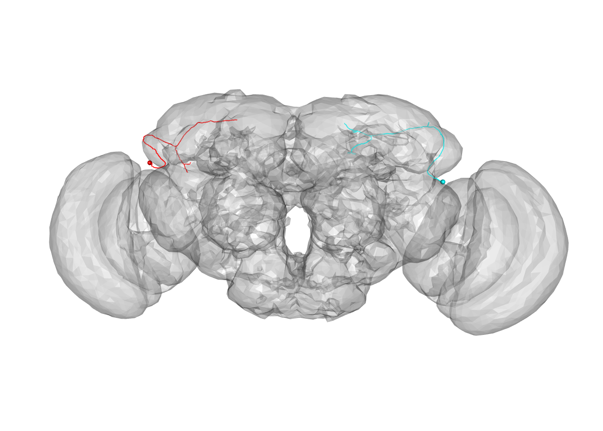
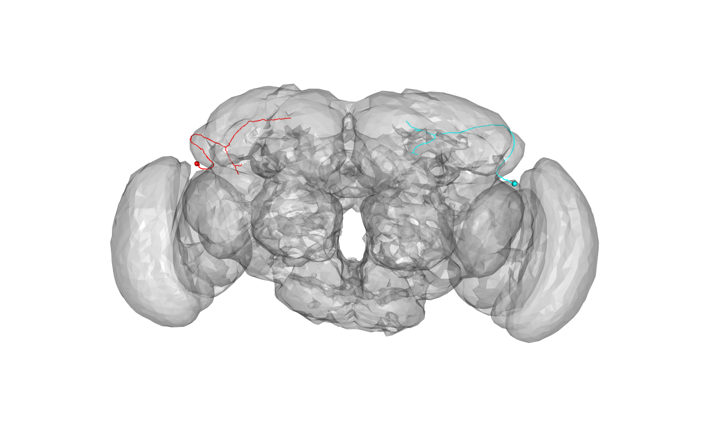
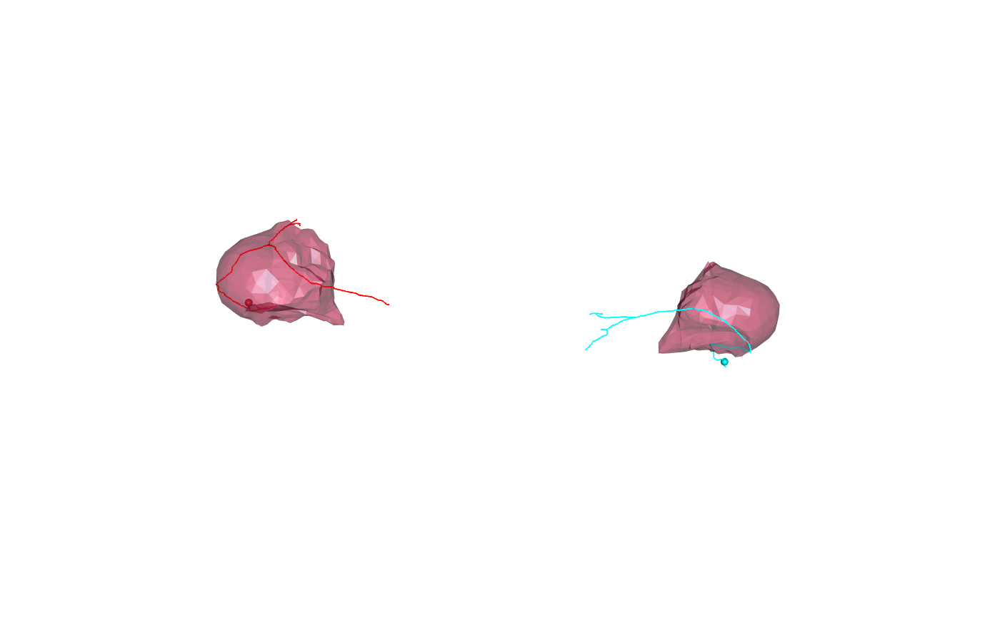

vignettes/xform_brain.Rmd
xform_brain.RmdIn combination with several other nat packages, elmr allows you to convert 3D objects (skeletons, surfaces, images) between FAFB EM space and a number of light level template brains.
In order to run some of the examples we need to ensure that we have CMTK available and the nat.flybrains package fully installed to provide bridging registrations. We will make some of our examples run conditionally based on this.
full.bridging=FALSE library(nat) if(!nzchar(cmtk.bindir())){ cat("CMTK not available! Some examples will not run.") } else { djrok=try(nat.flybrains::download_jefferislab_registrations()) if(inherits(djrok, "try-error")) cat("Unable to download bridging registrations! Some examples will not run.") else full.bridging=TRUE } # set up for 3d plots based on rgl package rgl::setupKnitr() # frontal view view3d(userMatrix=rgl::rotationMatrix(angle = pi, 1,0,0), zoom=0.6)
We have support for a significant number of template brains at this point. elmr itself adds support for transforms between different assemblies of the FAFB EM dataset and a single light level dataset (JFRC2013) - see the Landmarks vignette for details about the origin of this. You can plot a full set of the known connections using the nat.templatebrains::bridging_graph function.
library(nat.templatebrains) plot(bridging_graph(), vertex.size=15)

Note that there are multiple FAFB spaces based on different assemblies of the EM image data. The FAFB space always refers to the most recent assembly.
As our first example, we take the position of the centre of the left and right olfactory V glomeruli (CO2 responsive). We transform these from JFRC2013 to FAFB space.
library(elmr) vgloms.jfrc2013=data.frame(X=c(316,229), Y=c(143, 139), Z=c(26,22), row.names=c("V_L", "V_R")) # Convert to FAFB13 coordinates xform_brain(vgloms.jfrc2013, sample = JFRC2013, reference = FAFB)
## X Y Z
## V_L 580356.0 291205.7 61258.68
## V_R 465140.9 278772.5 63947.43Our second example converts some neurons from a light level space other than JFRC2013 to FAFB, making use of additional bridging registrations supplied by the nat.flybrains package.
# Conversion of neurons from the IS2 light level template brain # NB this conversion depends on a full install of nat.flybrains and CMTK # ensure that we have all the relevant bridging registrations downloaded Cell07PNs13.fafb=xform_brain(Cell07PNs[1:3], sample=IS2, reference=FAFB) plot(Cell07PNs13.fafb)

We can transform neurons and surfaces in order to compare EM tracings with light derived meshes describing the whole brain or neuropil subdomains.
We’ll start with an example where we convert a brain surface mesh to FAFB space and then plot a pair of sample neurons distributed with elmr:
FAFBJFRC2013.surf=xform_brain(JFRC2013.surf, sample = JFRC2013, reference = FAFB) # NB plot3d.templaterain gives nice defaults for brain surface plot but assumes # that the surface object is called XXXX.surf plot3d(FAFBJFRC2013.surf, alpha=.3, col='grey') plot3d(dense_core_neurons, lwd=2, soma=3000)

There are also surface objects available for individual neuropil domains that have been pre-transformed using this approach:
FAFBNP.surf=xform_brain(JFRC2NP.surf, sample = JFRC2, reference = FAFB)
and bundled with the elmr package.
We can plot neuropil subsets as follows:

nat.templatebrains and elmr now provide support for tagging objects e.g. neurons/surfaces with a template space. You can get / set this using the regtemplate function. We can repeat the earlier example, this time
# set the template space for the input coordinates regtemplate(vgloms.jfrc2013)=JFRC2013 # now we do not need to specify it in the xform_brain call vgloms.fafb=xform_brain(vgloms.jfrc2013, reference = FAFB) # check ouput space regtemplate(vgloms.fafb)
## === Template Brain ===
## Name: FAFB14
## Short Name: FAFB14
## Type: Stitched serial section EM volume of whole adult female brain
## Sex: F
## Dimensions:253952 x 155648 x 7063 voxels
## Voxel size:
## x = 4 nm
## y = 4 NA
## z = 40 NA
## Bounding box (nm):
## x = 0, y = 0, z = 0,
## x = 1015804, y = 622588, z = 282480.
## Description:
## DOI:This becomes quite useful when particular pieces of data are reused extensively in an interactive R session, especially if they are already distributed in tagged form.